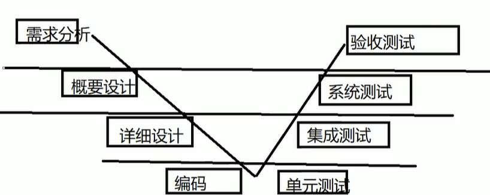
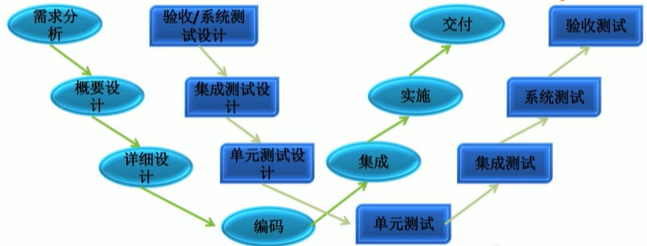
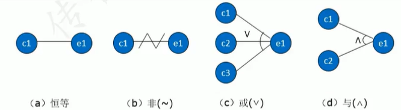
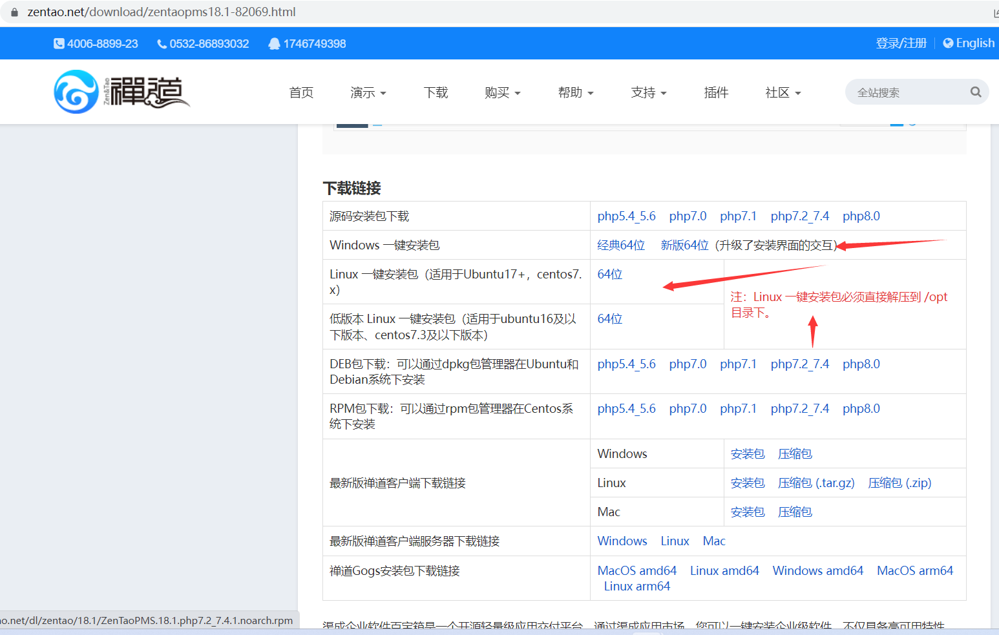

1.测试理论
1.1 软件测试分类
- 软件测试
- 按测试阶段划分：
- 单元测试
- 集成测试
- 系统测试
- 验收测试
- 按是否覆盖源代码划分：
- 黑盒测试
- 白盒测试
- 灰盒测试
- 按是否运行划分：
- 静态测试
- 动态测试
- 按是否自动化划分：
- 人工测试
- 自动化测试
- 更多：
- 冒烟测试
- 回归测试
- 随机测试
- 探索测试
- 按测试阶段划分：
1.1.1 按测试阶段划分
- 单元测试：
- 又称模块测试，针对软件设计中的最小单位-程序模块，进行正确性检查的测试工作
- 单元测试需要从程序内部结构出发设计测试用例
- 多个模块可以平行地独立进行单元测试
- 单元定义：C中指一个函数，Java中指一个类，在图形化软件中，单元一般指一个窗口，一个菜单
- 集成测试：
- 又叫组装测试，通常在单元测试的基础上，将所有程序模块进行有序的、递增的测试
- 重点测试模块和模块之间的接口
- 系统测试：
- 指的是将整个软件系统看为一个整体进行测试
- 测试的依据是软件需求说明书
- 验收测试：
- 检验软件是否符合用户需求的测试
- α测试：
- Alpha是内测版本
- 通常只在软件开发者内部交流
- 一般而言，该版本软件的bug较多，普通用户最好不要安装
- β测试：
- Beta是公测版本，是对所有用户开发的测试版本
- 这一版本通常由软件公司免费发布，用户可从相关的站点下载
- 通过一些专业爱好者的测试，将结果反馈给开发者，开发者再进行有针对性的修改
- γ测试：
- Gamma版本，指的是软件版本正式发行的候选版
- 该版本已经相当成熟了，与即将发行的正式版接近
1.1.2 按是否覆盖源代码划分
- 黑盒测试：
- 又称数据驱动测试，完全不考虑程序内部结构和内部特性
- 注重于测试软件的功能需求
- 只关心软件的输入数据和输出数据
- 白盒测试：
- 不但要关注功能，还要关注代码的具体实现
- 灰盒测试：
- 介于白盒测试和黑盒测试之间的一种测试，灰盒测试多用于集成测试阶段
- 不仅关注输入、输出的正确性，同时也关注程序内部的情况
1.1.3 按是否运行划分
- 静态测试：
- 不运行软件，静态的观察软件是否符合预期
- 动态测试：
- 运行软件，在运行过程中测试
1.1.4 按是否自动化划分
- 手工测试：
- 通过测试工程师手工对软件进行测试
- 自动化测试：
- 通过编程写代码，通过程序自动化测试软件是否有bug
1.1.5 其它分类
- 冒烟测试：
- 对基本功能、主要功能进行测试，避免测试资源的浪费，保证基本的功能和流程能够走通
- 回归测试：
- 当修复一个BUG后，把之前的测试用例在新的代码下进行再次测试
- 随机测试：
- 假设第一次接触软件，进行随机测试，避免惯性思维
- 随机测试主要是对被测软件的一些重要功能进行复测，也包括测试那些当前的测试用例没有覆盖到的部分
- 探索测试：
- 同时做测试设计和测试执行，探索复杂场景、容易忽略的场景
1.2 软件质量模型
软件质量，就是软件与明确的和隐含的定义的需求相一致的程度
功能性：
- 正确性
- 安全性
- 功能性的依从性
- 适合性
- 互操作性
可靠性：
- 成熟性
- 容错性
- 易恢复性
- 可靠性的依从性
易用性：
- 易理解性
- 易学性
- 易操作性
- 吸引性
- 易用性的依从性
效率：
- 时间特性
- 资源利用性
- 效率的依从性
维护性：
- 易分析性
- 易改变性
- 稳定性
- 易测试性
- 维护性的依从性
可移植性：
适应性
易安装性
共存性
易替换性
可移植性的依从性
1.3 软件开发过程模型
1.3.1 瀑布模型
- 需求分析
- 研发分析需求说明书
- 判断需求的可实现性
- 概要设计
- 用到具体的技术点
- 大致模块划分
- 详细设计
- 详细到可以为编码做支持
- 类和类的关系，类的设计
- 函数设计
- 各个接口的细节
- 数据库表的关系、字段关系
- … …
- 编码
- 依托于详细设计进行编码操作
- 软件测试
- 软件维护
- 上线后需要维护操作
特点：
线性模型
- 每一步都是按顺序来执行
文档驱动
- 每一步都有文档产出
优点：
- 开发的各个阶段比较清晰
- 当前一阶段完成后，只需要关注后续阶段
缺点：
- 依赖于早期的需求调查，不适应需求的变化
- 风险往往延至后期才显露，失去及早纠正的机会
1.3.2 快速模型
特点：
- 一边确定需求，一边实现
优点：
- 避免瀑布模型的缺点，可以适应早期的需求变化
缺点：
- 适用于小型项目
1.3.3 螺旋模型
特点：
- 引入了风险分析
优点：
- 螺旋模型很大程度上是一种风险驱动的方法体系
缺点：
- 采用螺旋模型需要具有相当丰富的风险评估经验和专门知识
1.4 软件测试模型
1.4.1 V模型

优点：
- 测试V模型即包含了底层测试又包含了高层测试
- 每个步骤都是文档驱动的
缺点：
- 和瀑布模型一样，当需求变更时将会导致阶段反复，返工量非常大，模型灵活性比较低
1.4.2 W模型

优点：
- 强调测试伴随着整个软件开发周期，而且测试的对象不仅仅是程序，需求和概要设计同样要测试
- 更早的介入测试，可以发现开发初期的缺陷，那么可以用更加低的成本进行缺陷修复
缺点：
- 使用起来技术复杂度高，对于需求和设计的测试要求高，实践起来困难
1.5 测试用例
定义：
- 测试用例：是为特定的目的而设计的一组测试输入、执行条件和预期结果的文档
测试用例八大要素：
- 用例编号
- 用例标题
- 测试项目
- 用例级别
- 预置条件
- 测试输入
- 执行步骤
- 预期结果
2.测试用例设计方法
2.1 等价类划分法
等价类概念：在所有测试的数据中，具有某种共同特征的数据子集
等价类分为：
- 有效等价类
- 满足需求的
- 无效等价类
- 不满足需求的
- 有效等价类
等价类操作步骤：
- 明确需求
- 确定有效和无效等价类
- 编写测试用例
2.2 边界值法
名词解释：
- 上点：就是边界上的点，不管是开区间还是闭区间
- 内点：就是在域范围内的任意一点
- 离点：
- 如果是闭区间，那么离点就是域范围外离上点最近的点
- 如果是开区间，那么离点就是域范围内离上点最近的点
边界值法的操作步骤：
- 明确需求
- 确定有效和无效等价类
- 确定边界值
- 编写测试用例
2.3 判定表法
定义
- 判定表法表示的是有多个输入和多个输出，而且输入与输入之间有相互的组合关系、输入和输出之间有相互的依赖关系
判定表的四个组成部分
- 条件桩：列出了系统的所有输入，列出的输入次序无关紧要（所有的输入）
- 动作桩：列出了系统可能采取的操作，这些操作的排列顺序没有约束（所有的输出）
- 条件项：列出针对它左列输入的取值，在所有可能情况下的真假值（所有输入的组合）
- 动作项：列出在输入项的各种取值情况下应该采取的动作（不同的输入组合，产生的不同的输出）
判定表法的操作步骤
- 明确需求
- 画出判定表
- 先画条件桩
- 然后画动作桩
- 罗列条件项的不同组合
- 根据条件项组合，完成动作项
- 生成测试用例，判定表的每条规则对应一条测试用例
2.4 因果图法
定义
- 用图解的方法表示输入的各种组合关系，写出判定表，从而设计相应的测试用例
- 适用范围：适用于分析程序输入条件的各种组合情况，以及输入与输出之间的依赖关系
符号表示

因果图法的操作步骤
- 明确需求
- 画出因果图
- 将因果图转换为判定表
2.5 正交法
定义
- 正交排列法就是能够使用最小的测试过程集合获得最大的测试覆盖率
- 适用范围：当可能的输入数据或者输入数据的组合数量很大时，由于不可能为每个输入组合创建测试用例，可以采用这种方法
特点
- 均匀分散
- 齐整可比
正交表的概念
- 一种特制的表，一般的正交表标记为：
$L_n(m^k)$ - n表示行数
- k表示表的列数（因素）
- m是列的取值个数
正交表法的操作步骤
- 明确需求
- 画出正交表
- 确定需求中的因素（所有的输入），与对应的个数（输入的取值）
- 根据因素数与水平数选取正交表
- 用需求中的文字代替正交表中的字母
- 写出测试用例
2.6 场景法
定义
- 场景法是用流程图描述用户的使用场景
- 然后通过覆盖流程路径来设计测试用例
- 流程图从开始到结束，有几条路就是几个路径
- 一个路径对应一条测试用例
意义
- 用户角度：用户平时使用的不是单个功能，而是多个功能组合起来进行使用
- 测试人员角度：平时测试的都是单个功能点进行测试，容易忽略多个功能的组合测试
场景法的操作步骤
- 明确需求
- 画出流程图
- 编写测试用例
2.7 错误推测法
定义
- 错误推测法是指利用直觉和经验猜测出出错的可能类型，有针对性列举出程序中所有可能的错误和容易发生错误的情况
- 它是测试经验丰富的测试人员喜欢使用的一种测试用例的设计方法
基本思想
- 列举出可能犯的错误或错误易发生的清单，然后根据清单编写测试用例
- 很大程度上是凭借经验进行的，即凭人们对过去所作测试结果的分析，对所揭示缺陷的规律性作直觉推测来发现缺陷
使用场景
- 项目紧急，时间不够
- 所有正常测试结束后，通过错误推测法再测试一些之前出现过问题的模块
3.软件缺陷
3.1 什么是缺陷
定义
- 软件或程序中存在的各种问题及错误
- 软件在使用（运行）过程中存在的任何问题（如：错误、异常、失效等），都叫做软件的缺陷，简称bug
软件缺陷的判定标准
软件未实现需求（规格）说明书中明确要求的功能 — 没有做
软件出现了需求（规格）说明书中指明不应该出现的错误 — 做错了
软件实现的功能超出需求（规格）说明书指明的范围 — 做多了
软件未实现需求（规格）说明书虽未明确指明但应该实现的需求 — 没做完
软件难以理解，不易使用，运行缓慢，用户体验不好 — 不完美
扩展：
- 违反上述标准的1、2、3条件，基本上属于高严重级的bug
- 违反上述标准的4、5条件，基本属于中低级别的bug
缺陷产生的原因
- 为什么需要分析缺陷的原因
- 能够帮助测试领导确定产品出现质量问题的具体阶段，方便后续软件产品质量的优化
- 能够帮助测试人员积累经验
- 原因阶段
- 需求阶段：需求描述不易理解，有歧义、错误等
- 设计阶段：设计文档存在错误或者缺陷
- 编码阶段：代码出现错误（语法、单词、标点符号等）
- 运行系统：软硬件系统本身故障导致软件缺陷
- 故障解决阶段：对于系统不熟悉修复问题时引入新bug
- 产生的根源
- 需求的变更
- 交流不充分
- 软件的复杂性
- 进度压力
缺陷信息
- 缺陷报告的核心内容
- 缺陷的标题 — 描述缺陷的核心问题 —> 错误问题的结论+【现象】
- 缺陷的预置条件 — 缺陷产生的前提 —> 和测试用例的预置条件一样
- 缺陷的复现步骤 — 复现缺陷的过程 —> 和测试用例的测试步骤基本一致（含测试数据）
- 缺陷的预期结果 — 希望得到的结果 —> 和测试用例的预期结果一致
- 缺陷的实际结果 — 实际得到的结果 —> 实际的错误问题描述（结论+错误现象）
- 缺陷的必要附件 — 图片、日志等信息（证据）—> 方便开发判定问题出现的具体位置
- 缺陷报告的其他要素
- 缺陷的编号：能够唯一的表示一个缺陷
- 缺陷的状态：描述缺陷生命周期的过程
- 新建（
new）：表示缺陷的产生 - 打开（
open）：表示开发确认通过 - 拒绝（
rejected）：表示开发确认不通过 - 进行中（
inprogress）：表示开发正在修复缺陷 - 已修复（
fixed）：表示开发已经修复完成 - 延迟修复（
delay/postpone）：表示开发延迟修复 - 测试通过（
closed）：表示测试通过，已关闭 - 测试不通过（
reopen/open）：表示测试不通过，重新打开
- 新建（
- 缺陷的所属模块：类似于用例的所属项目，描述缺陷产生的模块范围
- 缺陷的优先级：告诉开发当前缺陷修改的先后次序
（p1）priorityurgent priority：最高优先级veryhigh prioity：次高优先级high prioity：高优先级mediun prioity：中优先级low prioity：低优先级
- 缺陷的严重级：告诉产品当前缺陷对于整个产品的破坏程度（和优先级一一对应）
（s1）seriouscritical：致命的破坏major：高的破坏性medium：中等破坏minor：低等破坏tiny：微小的破坏
- 缺陷的类型：描述缺陷主要产生问题的原因
- 功能问题
- UI问题
- 兼容性问题
- 易用性问题
- 架构问题
- 安全问题
3.2 缺陷管理
缺陷报告注意事项
- 缺陷报告不能有缺陷
- 表达和描述简洁、准确
- 一个缺陷一个报告
- 缺陷一定是可重现的
- 不能有个人感情色彩
缺陷的跟踪流程
新提交的缺陷为新建状态，确认有效后为打开状态，经开发人员修改后，缺陷变为已修复（待验证）状态。此时就需要测试人员对缺陷进行回归测试，验证问题是否修复
如果问题已经修复，则测试人员将该缺陷的状态置为关闭状态（验证通过)，同时添加回测说明如”该缺陷已解决”
如果已经关闭的问题再次出现，则测试人员将该缺陷的状态修改为重新打开
缺陷统计
- 正在测试的软件哪个模块的问题最多
- 测试人员由谁报告的软件缺陷最多
- 各类缺陷所占的数量百分比分别是多少
- 开发人员能及时修复软件缺陷吗
- 开发人员一次正确修复缺陷的百分比是多少
- 正在开发的软件能否在计划的时间内正常发布
4. 项目管理工具–禅道
4.1 安装
下载
下载：

安装
4.2 使用
基本流程如下
- 1.产品经理创建产品
- 2.产品经理创建需求
- 3.项目经理创建项目
- 4.项目经理确定项目要做的需求
- 5.项目经理分解任务，指派到人
- 6.测试人员测试，提交bug